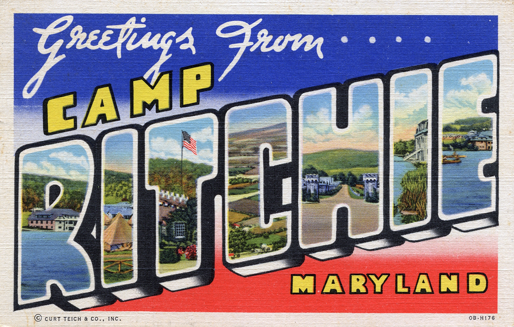
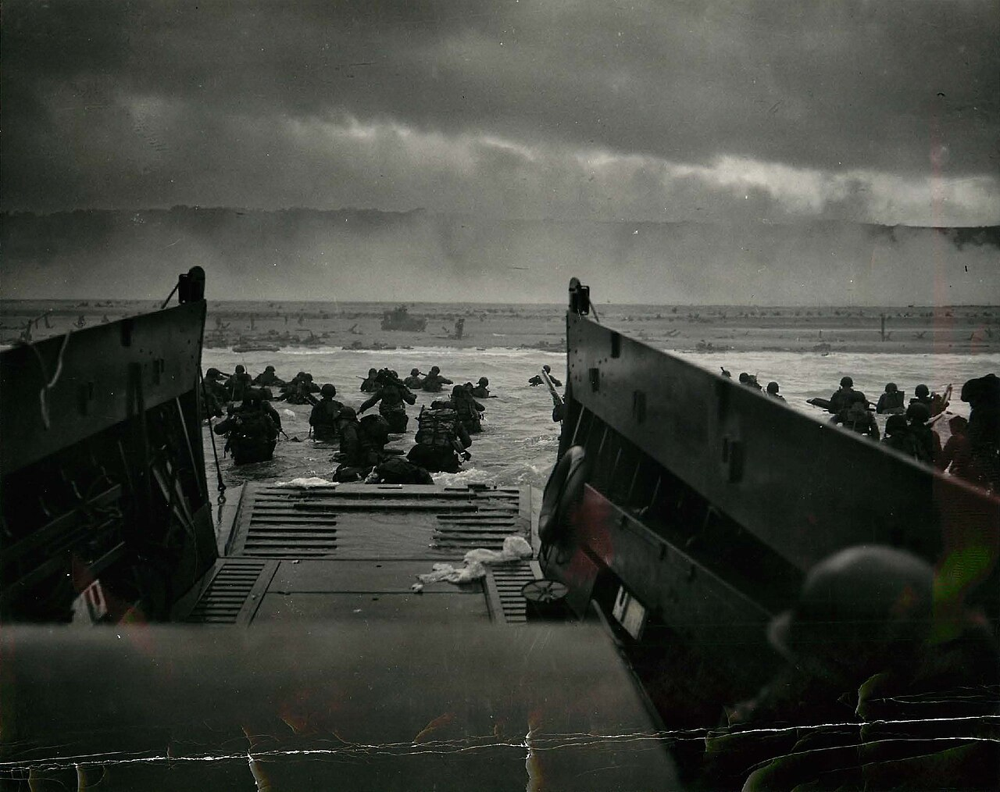

GUY STERN · A TRUE STORY
A Future
to Build
At fifteen, he left Germany for America.
A new language. A new country. A future to build.
סיפורו האמיתי של גאי שטרן — על בחירות, הסתגלות ותקווה.
Read, listen and think about the decisions that shaped his life.
CHAPTER 1 OF 6
Leaving Home
לעזוב את הבית
Germany to America · 1937
What would you need to learn in a new country?
CHAPTER 1 · WORD 1 / 4
boarded
Guy boarded a ship for America.
got onto a ship, train or plane
עלה לכלי תחבורה
Read the example. What could the word mean?
CHAPTER 1 · WORD 2 / 4
arranged
His parents arranged for him to live with an aunt and uncle.
made plans for something to happen
סידרו; ארגנו
Read the example. What could the word mean?
CHAPTER 1 · WORD 3 / 4
skills
Guy needed skills that could help him begin again.
things you can do well because you have learned them
מיומנויות; כישורים
Read the example. What could the word mean?
CHAPTER 1 · WORD 4 / 4
goal
Guy had a goal: he wanted to bring his family to safety.
something you want to achieve
מטרה
Read the example. What could the word mean?
CHAPTER 1 · Leaving Home
Passage 1 / 9In November 1937, fifteen-year-old Guy Stern boarded a ship for America.
בנובמבר 1937 עלה גאי שטרן בן החמש־עשרה על אונייה לאמריקה.
Touch or point to any word for Hebrew help.
CHAPTER 1 · Leaving Home
Passage 2 / 9His parents, brother and sister remained in Germany. He hoped that they would follow him.
הוריו, אחיו ואחותו נשארו בגרמניה. הוא קיווה שיצטרפו אליו בהמשך.
Touch or point to any word for Hebrew help.
CHAPTER 1 · Leaving Home
Passage 3 / 9The Nazis were making life more dangerous for Jewish families.
הנאצים הפכו את החיים למסוכנים יותר עבור משפחות יהודיות.
Touch or point to any word for Hebrew help.
CHAPTER 1 · Leaving Home
Passage 4 / 9Friends stopped speaking to Guy, and his sports club removed him because he was Jewish.
חברים הפסיקו לדבר עם גאי, ומועדון הספורט שלו הוציא אותו משורותיו משום שהיה יהודי.
Touch or point to any word for Hebrew help.
CHAPTER 1 · Leaving Home
Passage 5 / 9His parents arranged for him to live with an aunt and uncle in St. Louis.
הוריו סידרו שיגור אצל דודו ודודתו בסנט לואיס.
Touch or point to any word for Hebrew help.
CHAPTER 1 · Leaving Home
Passage 6 / 9Before he left, his father found an English teacher for him.
לפני שיצא, אביו מצא עבורו מורה לאנגלית.
Touch or point to any word for Hebrew help.
CHAPTER 1 · Leaving Home
Passage 7 / 9There was a new language to learn and a new country to understand.
היה עליו ללמוד שפה חדשה ולהכיר מדינה חדשה.
Touch or point to any word for Hebrew help.
CHAPTER 1 · Leaving Home
Passage 8 / 9At fifteen, Guy needed skills that could help him begin again.
בגיל חמש־עשרה נזקק גאי למיומנויות שיעזרו לו להתחיל מחדש.
Touch or point to any word for Hebrew help.
CHAPTER 1 · Leaving Home
Passage 9 / 9He also had a goal: once he reached America, he would try to bring his family to safety.
הייתה לו גם מטרה: לאחר שיגיע לאמריקה, הוא ינסה להביא את משפחתו למקום בטוח.
Touch or point to any word for Hebrew help.
CHAPTER 1 · THINK & DISCUSS · 1 / 2
Why did Guy's parents arrange for him to leave Germany?
מדוע הוריו של גאי דאגו שיעזוב את גרמניה?
Try an answer in your own words.
CHAPTER 1 · THINK & DISCUSS · 1 / 2
Why did Guy's parents arrange for him to leave Germany?
מדוע הוריו של גאי דאגו שיעזוב את גרמניה?
A POSSIBLE ANSWER
The Nazis were making life dangerous for Jewish families. His parents arranged for him to live with relatives in America.
הנאצים הפכו את חייהן של משפחות יהודיות למסוכנים. הוריו דאגו שיגור אצל קרובי משפחה באמריקה.
CHAPTER 1 · THINK & DISCUSS · 2 / 2
What goal did Guy have when he left home?
איזו מטרה הייתה לגאי כשעזב את הבית?
Try an answer in your own words.
CHAPTER 1 · THINK & DISCUSS · 2 / 2
What goal did Guy have when he left home?
איזו מטרה הייתה לגאי כשעזב את הבית?
A POSSIBLE ANSWER
He wanted to bring his family to safety in America.
הוא רצה להביא את משפחתו למקום בטוח באמריקה.
CHAPTER 2 OF 6
Finding a Place
למצוא מקום להשתייך אליו
School, work and new plans
How can school help someone feel at home?
CHAPTER 2 · WORD 1 / 4
welcomed
His teachers welcomed him.
showed someone they were happy to have him there
קיבלו בחום
Read the example. What could the word mean?
CHAPTER 2 · WORD 2 / 4
responsibilities
These were difficult responsibilities for a teenager.
things you need to do or take care of
תחומי אחריות; חובות
Read the example. What could the word mean?
CHAPTER 2 · WORD 3 / 4
journalist
Guy wanted to become a journalist.
a person who reports or writes news
עיתונאי
Read the example. What could the word mean?
CHAPTER 2 · WORD 4 / 4
practical
His wish to study was shaping practical decisions about his life.
useful in real situations
מעשיות
Read the example. What could the word mean?
CHAPTER 2 · Finding a Place
Passage 1 / 11Five days after arriving in St. Louis, Guy was attending an American high school. His teachers welcomed him.
חמישה ימים לאחר שהגיע לסנט לואיס, גאי כבר למד בבית ספר תיכון אמריקאי. מוריו קיבלו אותו בחום.
Touch or point to any word for Hebrew help.
CHAPTER 2 · Finding a Place
Passage 2 / 11He joined the swimming team and worked on the school newspaper.
הוא הצטרף לנבחרת השחייה ועבד בעיתון בית הספר.
Touch or point to any word for Hebrew help.
CHAPTER 2 · Finding a Place
Passage 3 / 11Taking part in school life helped him find his place.
ההשתתפות בחיי בית הספר עזרה לו למצוא את מקומו.
Touch or point to any word for Hebrew help.
CHAPTER 2 · Finding a Place
Passage 4 / 11Money was a problem.
הכסף היה בעיה.
Touch or point to any word for Hebrew help.
CHAPTER 2 · Finding a Place
Passage 5 / 11A teacher helped him find work in the school lunchroom, and later he worked in hotels.
מורה עזר לו למצוא עבודה בחדר האוכל של בית הספר, ובהמשך הוא עבד בבתי מלון.
Touch or point to any word for Hebrew help.
CHAPTER 2 · Finding a Place
Passage 6 / 11He studied while earning money. He also searched for someone who could help bring his family to America.
הוא למד ובמקביל הרוויח כסף. הוא גם חיפש מישהו שיוכל לעזור להביא את משפחתו לאמריקה.
Touch or point to any word for Hebrew help.
CHAPTER 2 · Finding a Place
Passage 7 / 11These were difficult responsibilities for a teenager. Yet he was discovering new interests and making plans.
אלה היו תחומי אחריות לא פשוטים לנער. ובכל זאת, הוא גילה תחומי עניין חדשים ותכנן תוכניות.
Touch or point to any word for Hebrew help.
CHAPTER 2 · Finding a Place
Passage 8 / 11Writing for the newspaper gave him another goal: he wanted to become a journalist.
הכתיבה לעיתון העניקה לו מטרה נוספת: הוא רצה להיות עיתונאי.
Touch or point to any word for Hebrew help.
CHAPTER 2 · Finding a Place
Passage 9 / 11Later, he found work at a hotel across the street from his university.
בהמשך מצא עבודה במלון מעבר לרחוב מהאוניברסיטה שלו.
Touch or point to any word for Hebrew help.
CHAPTER 2 · Finding a Place
Passage 10 / 11Sometimes he hurried into class still wearing his work uniform.
לפעמים מיהר לשיעור כשהוא עדיין לבוש במדי העבודה.
Touch or point to any word for Hebrew help.
CHAPTER 2 · Finding a Place
Passage 11 / 11His wish to study was shaping practical decisions about his life.
הרצון שלו ללמוד השפיע על החלטות מעשיות שקיבל בנוגע לחייו.
Touch or point to any word for Hebrew help.
CHAPTER 2 · THINK & DISCUSS · 1 / 2
Name two school activities that helped Guy find his place.
ציינו שתי פעילויות בבית הספר שעזרו לגאי למצוא את מקומו.
Try an answer in your own words.
CHAPTER 2 · THINK & DISCUSS · 1 / 2
Name two school activities that helped Guy find his place.
ציינו שתי פעילויות בבית הספר שעזרו לגאי למצוא את מקומו.
A POSSIBLE ANSWER
He joined the swimming team and worked on the school newspaper.
הוא הצטרף לנבחרת השחייה ועבד בעיתון בית הספר.
CHAPTER 2 · THINK & DISCUSS · 2 / 2
What did Guy do so that he could work and continue studying?
מה עשה גאי כדי שיוכל לעבוד ולהמשיך ללמוד?
Try an answer in your own words.
CHAPTER 2 · THINK & DISCUSS · 2 / 2
What did Guy do so that he could work and continue studying?
מה עשה גאי כדי שיוכל לעבוד ולהמשיך ללמוד?
A POSSIBLE ANSWER
He found work at a hotel across the street from his university. Sometimes he went to class in his work uniform.
הוא מצא עבודה במלון מעבר לרחוב מהאוניברסיטה שלו. לפעמים הגיע לשיעור במדי העבודה שלו.
CHAPTER 3 OF 6
A New Purpose
ייעוד חדש
Language becomes a way to help
How can a language become a useful skill?

CHAPTER 3 · WORD 1 / 4
applied
He applied for work in Navy intelligence.
formally asked to be considered for a job or position
הגיש מועמדות
Read the example. What could the word mean?
CHAPTER 3 · WORD 2 / 4
refused
His application was refused.
not accepted
נדחתה
Read the example. What could the word mean?
CHAPTER 3 · WORD 3 / 4
drafted
In 1943, he was drafted into the U.S. Army.
officially required to join the armed forces
גויס
Read the example. What could the word mean?
CHAPTER 3 · WORD 4 / 4
provide
His questions could provide information for other soldiers.
give something that is needed
לספק
Read the example. What could the word mean?
CHAPTER 3 · A New Purpose
Passage 1 / 9When the United States entered the war, Guy wanted to serve.
כאשר ארצות הברית נכנסה למלחמה, גאי רצה לשרת.
Touch or point to any word for Hebrew help.
CHAPTER 3 · A New Purpose
Passage 2 / 9He applied for work in Navy intelligence, where language skills were useful.
הוא הגיש מועמדות לעבודה במודיעין חיל הים, שם ידיעת שפות הייתה מועילה.
Touch or point to any word for Hebrew help.
CHAPTER 3 · A New Purpose
Passage 3 / 9His application was refused because he had not been born in America.
מועמדותו נדחתה משום שלא נולד באמריקה.
Touch or point to any word for Hebrew help.
CHAPTER 3 · A New Purpose
Passage 4 / 9In 1943, he was drafted into the U.S. Army.
בשנת 1943 גויס לצבא ארצות הברית.
Touch or point to any word for Hebrew help.
CHAPTER 3 · A New Purpose
Passage 5 / 9At Camp Ritchie, he learned to question German prisoners and understand military information.
במחנה ריצ׳י הוא למד לתשאל שבויים גרמנים ולהבין מידע צבאי.
Touch or point to any word for Hebrew help.
CHAPTER 3 · A New Purpose
Passage 6 / 9The language of the country he had escaped now gave him an important way to help.
השפה של המדינה שממנה נמלט העניקה לו כעת דרך חשובה לעזור.
Touch or point to any word for Hebrew help.
CHAPTER 3 · A New Purpose
Passage 7 / 9In June 1944, Guy landed in Normandy, France, three days after D-Day.
ביוני 1944 נחת גאי בנורמנדי שבצרפת, שלושה ימים לאחר יום הפלישה לנורמנדי.
Touch or point to any word for Hebrew help.
CHAPTER 3 · A New Purpose
Passage 8 / 9He returned to Europe wearing an American uniform. His questions could provide information for other soldiers.
הוא חזר לאירופה לבוש במדים אמריקאיים. שאלותיו יכלו לספק מידע לחיילים אחרים.
Touch or point to any word for Hebrew help.
CHAPTER 3 · A New Purpose
Passage 9 / 9The teenager who once needed help leaving Germany now had skills that his new country needed.
הנער שהיה זקוק פעם לעזרה כדי לעזוב את גרמניה היה כעת בעל כישורים שמדינתו החדשה נזקקה להם.
Touch or point to any word for Hebrew help.
CHAPTER 3 · THINK & DISCUSS · 1 / 2
Why was Guy's knowledge of German useful in the army?
מדוע ידיעת הגרמנית של גאי הייתה מועילה בצבא?
Try an answer in your own words.
CHAPTER 3 · THINK & DISCUSS · 1 / 2
Why was Guy's knowledge of German useful in the army?
מדוע ידיעת הגרמנית של גאי הייתה מועילה בצבא?
A POSSIBLE ANSWER
It helped him question German prisoners and understand military information.
היא עזרה לו לתשאל שבויים גרמנים ולהבין מידע צבאי.
CHAPTER 3 · THINK & DISCUSS · 2 / 2
How had Guy's role changed when he returned to Europe?
כיצד השתנה תפקידו של גאי כשחזר לאירופה?
Try an answer in your own words.
CHAPTER 3 · THINK & DISCUSS · 2 / 2
How had Guy's role changed when he returned to Europe?
כיצד השתנה תפקידו של גאי כשחזר לאירופה?
A POSSIBLE ANSWER
He had left Germany as a teenager who needed help. He returned as an American soldier with skills that could help others.
הוא עזב את גרמניה כנער שהיה זקוק לעזרה. הוא חזר כחייל אמריקאי עם כישורים שיכלו לעזור לאחרים.
CHAPTER 4 OF 6
A Familiar Name
שם מוכר
An encounter in wartime France
What changes when a person gains new skills?

CHAPTER 4 · WORD 1 / 4
familiar
Guy found a familiar name among the German prisoners.
known or recognized from before
מוכר
Read the example. What could the word mean?
CHAPTER 4 · WORD 2 / 4
former
One of the club's former members was a prisoner.
from an earlier time
לשעבר
Read the example. What could the word mean?
CHAPTER 4 · WORD 3 / 4
identity
Guy kept his own identity hidden.
who a person is
זהות
Read the example. What could the word mean?
CHAPTER 4 · WORD 4 / 4
knowledge
His knowledge of German life had become useful.
what someone knows about a subject
ידע
Read the example. What could the word mean?
CHAPTER 4 · A Familiar Name
Passage 1 / 8During the fighting in France, Guy found a familiar name among the German prisoners.
במהלך הלחימה בצרפת מצא גאי שם מוכר בין השבויים הגרמנים.
Touch or point to any word for Hebrew help.
CHAPTER 4 · A Familiar Name
Passage 2 / 8It belonged to someone he knew from his old sports club.
זה היה שמו של אדם שהכיר ממועדון הספורט הישן שלו.
Touch or point to any word for Hebrew help.
CHAPTER 4 · A Familiar Name
Passage 3 / 8Years earlier, that club had told Guy's family that Jewish children could no longer belong.
שנים קודם לכן הודיע המועדון למשפחתו של גאי שילדים יהודים לא יוכלו עוד להיות חברים בו.
Touch or point to any word for Hebrew help.
CHAPTER 4 · A Familiar Name
Passage 4 / 8Now one of its former members was a prisoner, and Guy was the American soldier asking the questions.
כעת היה אחד מחבריו לשעבר של המועדון שבוי, וגאי היה החייל האמריקאי ששאל את השאלות.
Touch or point to any word for Hebrew help.
CHAPTER 4 · A Familiar Name
Passage 5 / 8According to Guy's account, he questioned the man at night, with a light shining on the prisoner.
לפי סיפורו של גאי, הוא תשאל את האיש בלילה, כשאור מאיר על השבוי.
Touch or point to any word for Hebrew help.
CHAPTER 4 · A Familiar Name
Passage 6 / 8Guy kept his own identity hidden. He did not tell the man who he was.
גאי הסתיר את זהותו. הוא לא סיפר לאיש מי הוא.
Touch or point to any word for Hebrew help.
CHAPTER 4 · A Familiar Name
Passage 7 / 8The boy pushed out of a sports club had grown into a trained soldier.
הנער שסולק ממועדון ספורט גדל והיה לחייל מיומן.
Touch or point to any word for Hebrew help.
CHAPTER 4 · A Familiar Name
Passage 8 / 8His knowledge of German life had become useful in the fight against the Nazis.
הידע שלו על החיים בגרמניה הפך למועיל במאבק בנאצים.
Touch or point to any word for Hebrew help.
CHAPTER 4 · THINK & DISCUSS · 1 / 2
How did Guy know the German prisoner?
מהיכן הכיר גאי את השבוי הגרמני?
Try an answer in your own words.
CHAPTER 4 · THINK & DISCUSS · 1 / 2
How did Guy know the German prisoner?
מהיכן הכיר גאי את השבוי הגרמני?
A POSSIBLE ANSWER
He knew him from his old sports club in Germany.
הוא הכיר אותו ממועדון הספורט הישן שלו בגרמניה.
CHAPTER 4 · THINK & DISCUSS · 2 / 2
What did Guy keep hidden during the questioning?
מה הסתיר גאי במהלך התשאול?
Try an answer in your own words.
CHAPTER 4 · THINK & DISCUSS · 2 / 2
What did Guy keep hidden during the questioning?
מה הסתיר גאי במהלך התשאול?
A POSSIBLE ANSWER
He kept his identity hidden. He did not tell the prisoner who he was.
הוא הסתיר את זהותו. הוא לא סיפר לשבוי מי הוא.
CHAPTER 5 OF 6
Changing Direction
לשנות כיוון
Loss, a closed door and a new path
What can you do when a plan does not work?
CHAPTER 5 · WORD 1 / 4
efforts
His efforts to rescue his family had failed.
work and energy used to try to do something
מאמצים
Read the example. What could the word mean?
CHAPTER 5 · WORD 2 / 4
recommendation
Guy had a letter of recommendation from an army officer.
a statement saying that someone is suitable for something
המלצה
Read the example. What could the word mean?
CHAPTER 5 · WORD 3 / 4
Eventually
Eventually, he chose another direction.
after some time
בסופו של דבר
Read the example. What could the word mean?
CHAPTER 5 · WORD 4 / 4
literature
He studied literature and later became a professor.
written works, especially stories, plays and poems
ספרות
Read the example. What could the word mean?
CHAPTER 5 · Changing Direction
Passage 1 / 9After the war, Guy learned that his parents, brother and sister had been murdered in the Holocaust.
לאחר המלחמה גילה גאי שהוריו, אחיו ואחותו נרצחו בשואה.
Touch or point to any word for Hebrew help.
CHAPTER 5 · Changing Direction
Passage 2 / 9His efforts to rescue them had failed. This loss would remain part of his life.
מאמציו להציל אותם נכשלו. האובדן הזה נשאר חלק מחייו.
Touch or point to any word for Hebrew help.
CHAPTER 5 · Changing Direction
Passage 3 / 9He still hoped to become a journalist.
הוא עדיין קיווה להיות עיתונאי.
Touch or point to any word for Hebrew help.
CHAPTER 5 · Changing Direction
Passage 4 / 9With a letter of recommendation from an army officer, he went to the New York Times.
עם מכתב המלצה מקצין בצבא, הוא פנה לניו יורק טיימס.
Touch or point to any word for Hebrew help.
CHAPTER 5 · Changing Direction
Passage 5 / 9However, the newspaper had no job for him.
אולם לעיתון לא הייתה משרה עבורו.
Touch or point to any word for Hebrew help.
CHAPTER 5 · Changing Direction
Passage 6 / 9Guy returned several times, but the situation did not change. Eventually, he chose another direction.
גאי חזר כמה פעמים, אך המצב לא השתנה. בסופו של דבר בחר כיוון אחר.
Touch or point to any word for Hebrew help.
CHAPTER 5 · Changing Direction
Passage 7 / 9He worked as a waiter and went back to university.
הוא עבד כמלצר וחזר לאוניברסיטה.
Touch or point to any word for Hebrew help.
CHAPTER 5 · Changing Direction
Passage 8 / 9His goal changed as he learned more. He studied literature and later became a professor.
מטרתו השתנתה ככל שלמד יותר. הוא למד ספרות ובהמשך נעשה פרופסור.
Touch or point to any word for Hebrew help.
CHAPTER 5 · Changing Direction
Passage 9 / 9A plan that had failed led him towards work he would continue for many years.
תוכנית שנכשלה הובילה אותו לעבודה שבה ימשיך במשך שנים רבות.
Touch or point to any word for Hebrew help.
CHAPTER 5 · THINK & DISCUSS · 1 / 2
What did Guy do after he could not find a job at the newspaper?
מה עשה גאי לאחר שלא הצליח למצוא עבודה בעיתון?
Try an answer in your own words.
CHAPTER 5 · THINK & DISCUSS · 1 / 2
What did Guy do after he could not find a job at the newspaper?
מה עשה גאי לאחר שלא הצליח למצוא עבודה בעיתון?
A POSSIBLE ANSWER
He worked as a waiter and went back to university. Later, he became a professor.
הוא עבד כמלצר וחזר לאוניברסיטה. בהמשך היה לפרופסור.
CHAPTER 5 · THINK & DISCUSS · 2 / 2
What shows that Guy could change his plans?
מה מראה שגאי היה מסוגל לשנות את תוכניותיו?
Try an answer in your own words.
CHAPTER 5 · THINK & DISCUSS · 2 / 2
What shows that Guy could change his plans?
מה מראה שגאי היה מסוגל לשנות את תוכניותיו?
A POSSIBLE ANSWER
He wanted to be a journalist, but when that plan failed, he continued studying and chose a new direction.
הוא רצה להיות עיתונאי, אך כשהתוכנית לא הצליחה, הוא המשיך ללמוד ובחר כיוון חדש.
CHAPTER 6 OF 6
A Future to Build
עתיד שאפשר לבנות
Keep learning. Leave room for possibility.
What is one step you can take towards a goal?
CHAPTER 6 · WORD 1 / 4
abilities
Guy had years ahead of him to discover abilities.
things a person can do
יכולות
Read the example. What could the word mean?
CHAPTER 6 · WORD 2 / 4
possibilities
He kept making room for new possibilities.
things that may happen or become possible
אפשרויות
Read the example. What could the word mean?
CHAPTER 6 · WORD 3 / 4
refugee
Guy once entered an American classroom as a refugee.
a person who has had to leave home because it is not safe
פליט
Read the example. What could the word mean?
CHAPTER 6 · WORD 4 / 4
rewards
His students' success became one of the greatest rewards of his life.
good things that come from something you do
מקורות סיפוק; דברים טובים שמקבלים בעקבות מעשה
Read the example. What could the word mean?
CHAPTER 6 · A Future to Build
Passage 1 / 11At fifteen, Guy could not know what his future would hold.
בגיל חמש־עשרה גאי לא יכול היה לדעת מה צופן לו העתיד.
Touch or point to any word for Hebrew help.
CHAPTER 6 · A Future to Build
Passage 2 / 11He had years ahead of him in which to learn, discover abilities and change direction.
היו לפניו שנים שבהן יוכל ללמוד, לגלות יכולות ולשנות כיוון.
Touch or point to any word for Hebrew help.
CHAPTER 6 · A Future to Build
Passage 3 / 11The decisions he made at school became part of the adult he would become.
ההחלטות שקיבל בבית הספר הפכו לחלק מהאדם הבוגר שיהיה.
Touch or point to any word for Hebrew help.
CHAPTER 6 · A Future to Build
Passage 4 / 11He needed help from relatives, teachers and others.
הוא נזקק לעזרתם של קרובי משפחה, מורים ואחרים.
Touch or point to any word for Hebrew help.
CHAPTER 6 · A Future to Build
Passage 5 / 11Some goals remained out of reach, and some losses could never be repaired.
חלק מהמטרות נותרו מחוץ להישג יד, ועל חלק מהאובדנים לא היה אפשר לפצות לעולם.
Touch or point to any word for Hebrew help.
CHAPTER 6 · A Future to Build
Passage 6 / 11Still, he kept making room for new possibilities.
ובכל זאת, הוא המשיך לפנות מקום לאפשרויות חדשות.
Touch or point to any word for Hebrew help.
CHAPTER 6 · A Future to Build
Passage 7 / 11For young people, his life offers an important message: set goals, accept help and keep learning.
לצעירים מציעים חייו מסר חשוב: הציבו מטרות, קבלו עזרה והמשיכו ללמוד.
Touch or point to any word for Hebrew help.
CHAPTER 6 · A Future to Build
Passage 8 / 11You can change your plans as you grow.
אפשר לשנות את התוכניות עם ההתבגרות.
Touch or point to any word for Hebrew help.
CHAPTER 6 · A Future to Build
Passage 9 / 11Believing that life can become better can give you a reason to take the next step.
האמונה שהחיים יכולים להשתפר יכולה לתת לכם סיבה לעשות את הצעד הבא.
Touch or point to any word for Hebrew help.
CHAPTER 6 · A Future to Build
Passage 10 / 11Guy once entered an American classroom as a refugee. Later, he spent decades teaching students.
גאי נכנס פעם לכיתה אמריקאית כפליט. בהמשך הקדיש עשרות שנים להוראת סטודנטים.
Touch or point to any word for Hebrew help.
CHAPTER 6 · A Future to Build
Passage 11 / 11Their success became one of the greatest rewards of his life.
הצלחתם הייתה לאחד ממקורות הסיפוק הגדולים ביותר בחייו.
Touch or point to any word for Hebrew help.
CHAPTER 6 · THINK & DISCUSS · 1 / 2
Which three actions does Guy's life encourage young people to take?
אילו שלושה דברים מעודד סיפור חייו של גאי צעירים לעשות?
Try an answer in your own words.
CHAPTER 6 · THINK & DISCUSS · 1 / 2
Which three actions does Guy's life encourage young people to take?
אילו שלושה דברים מעודד סיפור חייו של גאי צעירים לעשות?
A POSSIBLE ANSWER
Set goals, accept help and keep learning.
להציב מטרות, לקבל עזרה ולהמשיך ללמוד.
CHAPTER 6 · THINK & DISCUSS · 2 / 2
How can believing in a better future help someone?
כיצד האמונה בעתיד טוב יותר יכולה לעזור לאדם?
Try an answer in your own words.
CHAPTER 6 · THINK & DISCUSS · 2 / 2
How can believing in a better future help someone?
כיצד האמונה בעתיד טוב יותר יכולה לעזור לאדם?
A POSSIBLE ANSWER
It can give someone a reason to take the next step and keep looking for new possibilities.
היא יכולה לתת לאדם סיבה לעשות את הצעד הבא ולהמשיך לחפש אפשרויות חדשות.
AFTER THE STORY
Your next step
What goal would you like to work towards, and what is one step you can take now?
לאיזו מטרה הייתם רוצים להתקדם, ומהו צעד אחד שתוכלו לעשות כבר עכשיו?
I would like to…
One step I can take is…
Share an idea, or write two sentences in your notebook.